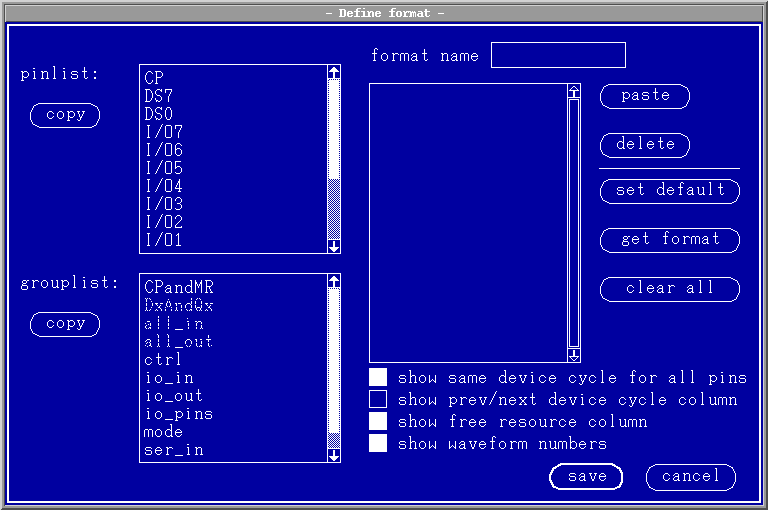

Defining the Table Format
To define a new table format proceed as follows:
- In the Format pulldown menu pick the option define new format.
The define format dialog box appears, see the figure below.

- Select the pins/pingroups from the pinlist: or grouplist: browser.
- Click the appropriate copy button.
The selected pins/pingroups appear in the table format browser (on the right of the dialog box).
- Type a name for the new format into the format name entry field.
- Select the options you need:
- show same device cycle for all pins
When selected, the same named device cycles are displayed for all pins. When not selected, you can show different device cycles for each pin.
- show prev/next device cycle column
When selected, the Device Cycle Edit Area shows the connections to the device cycles immediately preceding and following the displayed device cycle. You can enter device cycle names into the prev. and next columns (see Selecting a Device Cycle for Display/Editing).
The prev/next device cycle column appears only in double size window display.
- show free resource column
When selected, the free column shows for each pin the system resources that are currently free:
- DC: The number of free device cycles in the Device Cycle Table (see Device Cycles).
- Wf. The number of free index entries in the Physical Waveform Table (see The Physical Waveform Table).
- E: The number of free edges. An edge is free when it has no shape
assigned to it. It does not matter whether it is already in the Device cycle edit area, or
still in the unused edge box, (see Selecting Edges).
The free column provides you with a very useful check of the system resources that are available while you are setting up your timing. It appears only in double size window display.
- show same device cycle for all pins
- Click save. (If you 're not happy with the new format click cancel.)
The buttons on the right of the dialog box have the following functions:
- paste
repastes the last copied pins/pingroups from the pinlist or grouplist browser to the table format browser.
- delete
deletes the selected pins/groups from the table format browser.
- set default
copies all configured pins into the table format browser.
- get format
lets you import an existing table format via a format list dialog box. Select a format from a browser in the dialog box.
- clear all
clears all pins out of the table format browser.
Functional changes
- Introduced before SmarTest 6.3.2
- SmarTest 6.5.2: The logical waveform is not supported.